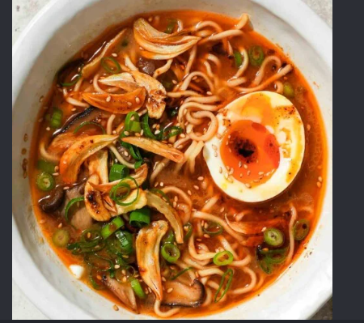

Ramen

Ramen is a popular Japanese noodle soup known for its rich broth and
various toppings. It is often enjoyed as a hearty meal during colder
months.
Ingredients:
- Ramen Noodles
- Vegetable Oil
- Onion
- Pepper
- Vegetables
- Broth (Chicken, Beef, or egg)
Steps:
- Boil water in a pot.
- Add Ramen noodles and cook for 3 minutes.
- Pour the broth into the pot and let it simmer.
- Drain the water and add vegetable oil, onion, and pepper.
- Mix well and serve hot with your choice of toppings.
Home